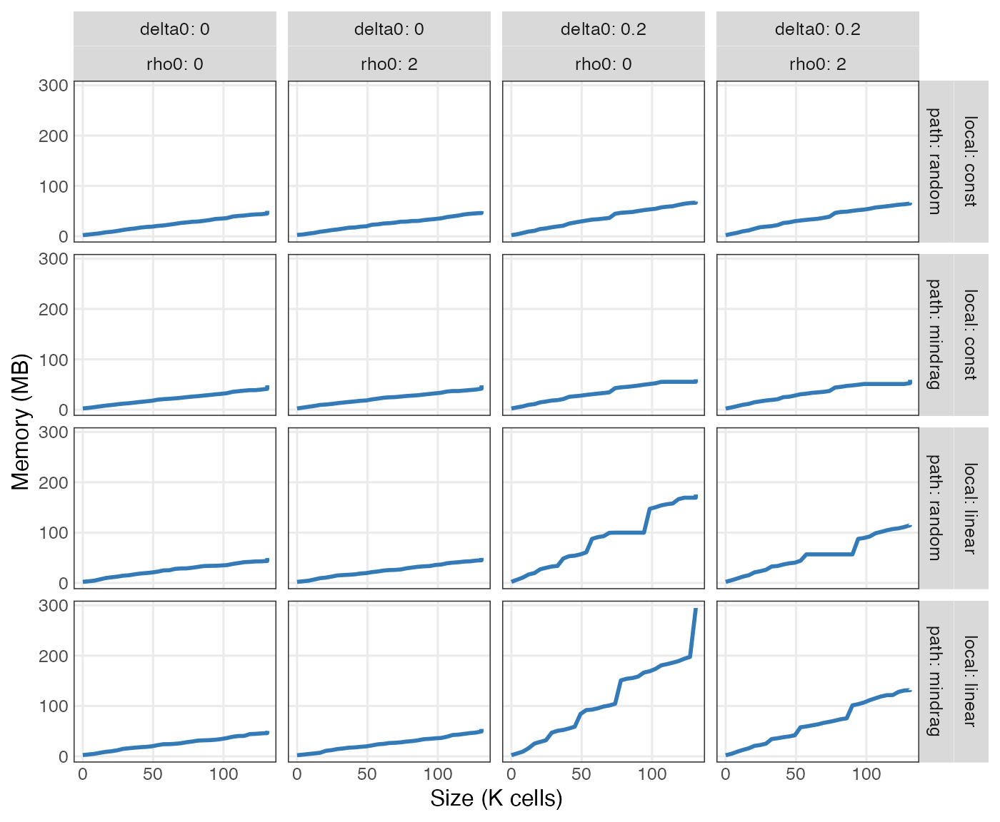
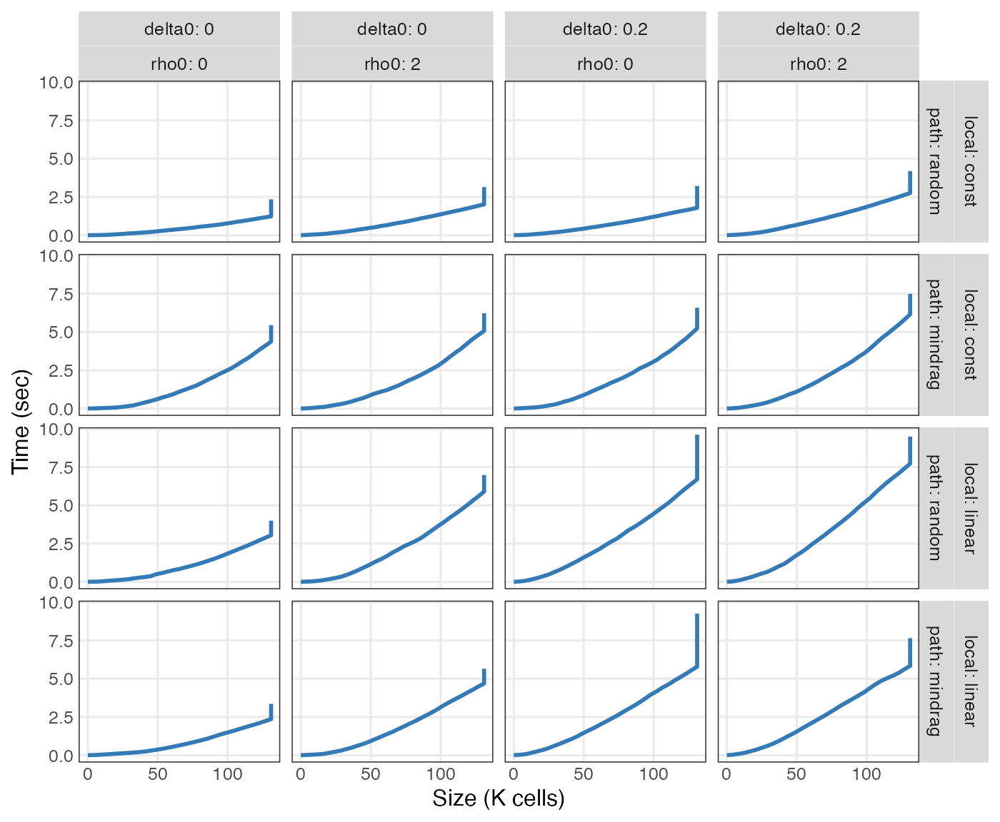

Run simulation with benchmark information
library(tumopp)
.const = list(D = 3, C = "hex", k = 10, N = 2 ** 17, benchmark = TRUE)
.alt = list(
L = c("const", "linear"),
P = c("random", "mindrag"),
d = c(0, 0.2),
m = c(0, 2)
)
args_tbl = tumopp::make_args(alt = .alt, const = .const) |> print()
## # A tibble: 16 × 9
## L P d m D C k N benchmark
## <chr> <chr> <dbl> <dbl> <dbl> <chr> <dbl> <dbl> <lgl>
## 1 const mindrag 0 0 3 hex 10 131072 TRUE
## 2 const mindrag 0 2 3 hex 10 131072 TRUE
## 3 const mindrag 0.2 0 3 hex 10 131072 TRUE
## 4 const mindrag 0.2 2 3 hex 10 131072 TRUE
## 5 const random 0 0 3 hex 10 131072 TRUE
## 6 const random 0 2 3 hex 10 131072 TRUE
## 7 const random 0.2 0 3 hex 10 131072 TRUE
## 8 const random 0.2 2 3 hex 10 131072 TRUE
## 9 linear mindrag 0 0 3 hex 10 131072 TRUE
## 10 linear mindrag 0 2 3 hex 10 131072 TRUE
## 11 linear mindrag 0.2 0 3 hex 10 131072 TRUE
## 12 linear mindrag 0.2 2 3 hex 10 131072 TRUE
## 13 linear random 0 0 3 hex 10 131072 TRUE
## 14 linear random 0 2 3 hex 10 131072 TRUE
## 15 linear random 0.2 0 3 hex 10 131072 TRUE
## 16 linear random 0.2 2 3 hex 10 131072 TRUE
set.seed(24601L)
results = tumopp::tumopp(args_tbl, graph = FALSE) |> print()
unnested = results |>
dplyr::select(!c(population, seed)) |>
dplyr::mutate(outdir = fs::path_file(outdir)) |>
dplyr::select(where(\(x) dplyr::n_distinct(x) > 1L)) |>
tidyr::unnest(benchmark) |>
print()
df_benchmark = unnested |>
dplyr::distinct(outdir, size, .keep_all = TRUE) |>
dplyr::mutate(
local = factor(local, levels = .alt[["L"]]),
path = factor(path, levels = .alt[["P"]]),
size = size / 1000, # to K
memory = maxrss / 1024, # K to M
utime = utime / 1000, # ms to sec
stime = stime / 1000, # ms to sec
maxrss = NULL
) |>
print()
# usethis::use_data(df_benchmark, internal = TRUE, overwrite = TRUE)Memory
- Memory usage increases linearly with the increasing number of cells because tumopp is an individual-based model of tumor cells.
- Memory is also used to trace back cell lineages and write them to a text file after growth simulation.
- Cell death makes cell lineages longer given the same number of extant cells.
- The effect of cell death is more pronounced when the population
average of birth rate is decreased with local competition
(
-Llinear).
ggplot(df_benchmark) +
aes(size, memory) +
geom_line(linewidth = 1, color = "#337ab7") +
facet_grid(vars(local, path), vars(delta0, rho0), label = label_both) +
labs(x = "Size (K cells)", y = "Memory (MB)")
Time
- The larger a population gets, the longer it takes
- (
-Pmindrag) to search for nearest empty sites from dividing cells, - (
-Lconst) to push out other cells, - (
-Llinear) to skip event queues of dormant (surrounded) cells.
- (
- The combination of
-Lconst -Pmindragis slower than the others because it involves both search and push from interior cells. - The effects of cell death and migration are smaller than those of
local competition (
-L) and placement of daughter cells(-P).
ggplot(df_benchmark) +
aes(size, utime + stime) +
geom_line(linewidth = 1, color = "#337ab7") +
facet_grid(vars(local, path), vars(delta0, rho0), label = label_both) +
labs(x = "Size (K cells)", y = "Time (sec)")